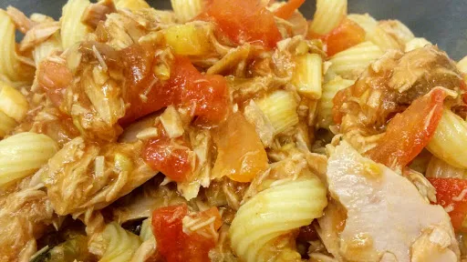

Olive & tuna pasta
4
Gluten Free

Tuna can be a really handy staple to make less expensive dishes. Be careful not to stir too much after the tuna is added, otherwise it will be a bit mushy. Gluten-free: use gluten-free pasta and stock cube.
Ingredients
x0.5
x1
x2
x3
2
mugs pasta
1
tbsp olive oil
6
spring onions, chopped
1
clove garlic, finely chopped
4
large tomatoes, chopped
2
tbsp tomato puree
¼
mug water
1
fish stock cube
20
olives, half black, half green, roughly chopped
2
tbsp freshly chopped basil
6
anchovy fillets, roughly chopped
2 x 185 g tins tuna
Instructions
Cook the pasta , drain and return to the pan.
Meanwhile, heat the oil in a wok or large frying pan. Fry the onions , garlic and tomatoes until they begin to soften.
Add the tomato puree , water and stock cube . Season well and simmer for 2 minutes.
Add the olives , basil , anchovies and flaked tuna along with the cooked pasta . Heat for 1 minute.
Nosh: Quick & Easy
Short Link
Long Link